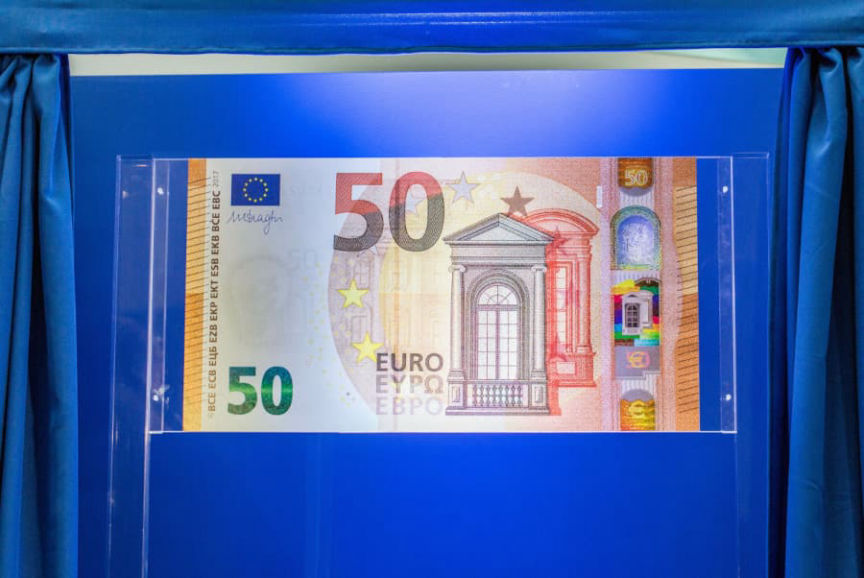
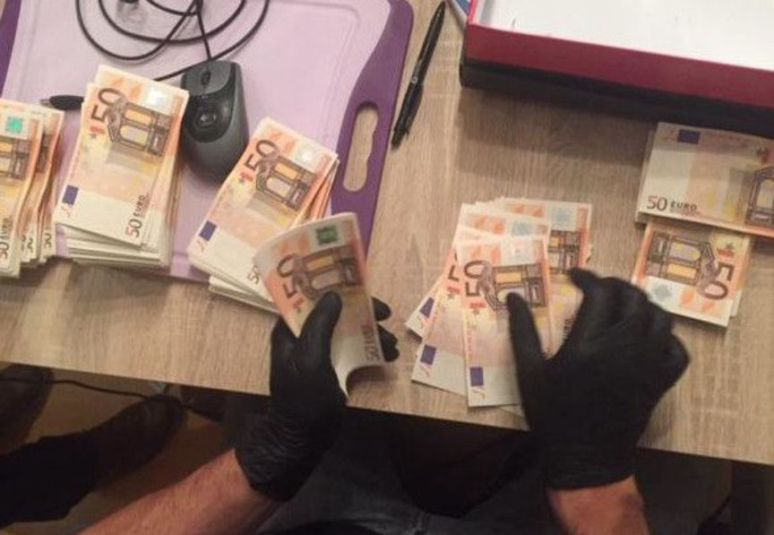
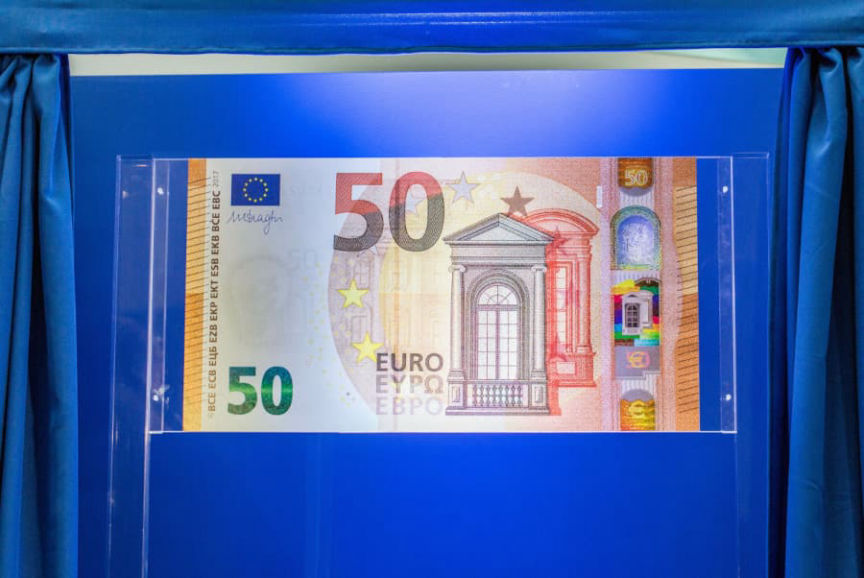
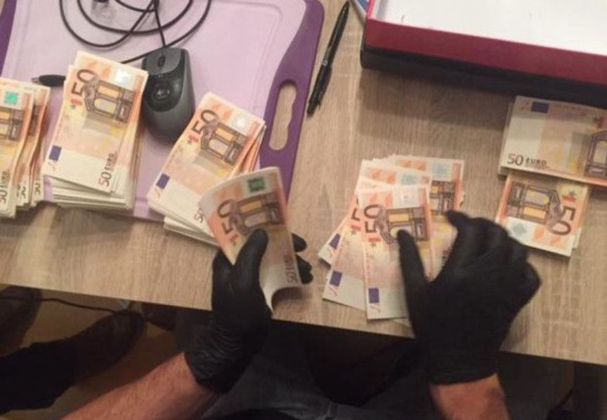

Counterfeit Euro Use in Germany Is on the Decline
~1 min read | Published on 2022-08-04, tagged Counterfeits using 218 words.
The number of counterfeit banknotes in circulation in Germany fell to the lowest since 2013.
According to Germany’s central bank, the Deutsche Bundesbank, law enforcement officers, bank employees, and retailers pulled 19,789 counterfeit euro notes out of circulation in the first six months of 2022. The number of counterfeit notes decreased by 3.9% since the second half of 2021.

The number of notes pulled from circulation is the lowest since the second half of 2013, when authorities recorded 19,350 fake euros. “The trend in counterfeit money has been declining since 2016,” said Bundesbank board member Johannes Beermann.
However, the damage caused by counterfeit euros increased by 11% to €991,690 since the second half of 2021.[list]*Counterfeit €20 and €50 banknotes account for 77% of the counterfeit euros seized*There are five fake euro notes per 10,000 inhabitants in Germany*There are ten fake euros per 10,000 across Europe[/list]
Beerman suggested that the government’s lockdowns made it more difficult for criminals to pass counterfeit notes.

The Federal Criminal Police Office (BKA) reported that more than half of the counterfeit notes in circulation came from vendors on the darknet or “via encrypted messenger services.”
Counterfeit Figures At Lowest Level Since 2013 | globeecho.com, archive.is, archive.org
According to Germany’s central bank, the Deutsche Bundesbank, law enforcement officers, bank employees, and retailers pulled 19,789 counterfeit euro notes out of circulation in the first six months of 2022. The number of counterfeit notes decreased by 3.9% since the second half of 2021.

The European Central Bank unveiled a new 50-euro note in 2016 to combat counterfeiting
The number of notes pulled from circulation is the lowest since the second half of 2013, when authorities recorded 19,350 fake euros. “The trend in counterfeit money has been declining since 2016,” said Bundesbank board member Johannes Beermann.
However, the damage caused by counterfeit euros increased by 11% to €991,690 since the second half of 2021.[list]*Counterfeit €20 and €50 banknotes account for 77% of the counterfeit euros seized*There are five fake euro notes per 10,000 inhabitants in Germany*There are ten fake euros per 10,000 across Europe[/list]
Beerman suggested that the government’s lockdowns made it more difficult for criminals to pass counterfeit notes.

Fake euros seized during an investigation into Europe’s second-largest counterfeit currency network
The Federal Criminal Police Office (BKA) reported that more than half of the counterfeit notes in circulation came from vendors on the darknet or “via encrypted messenger services.”
Counterfeit Figures At Lowest Level Since 2013 | globeecho.com, archive.is, archive.org